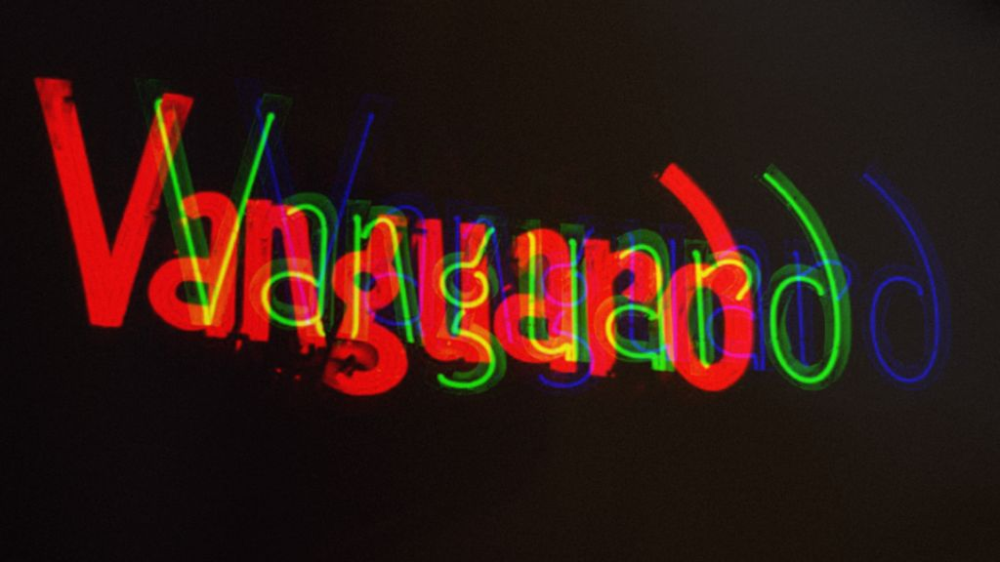

Exploring the 5 Best Music Bars in the New York Area

From historic jazz joints to trendy indie spaces, the New York area boasts an eclectic array of music bars that cater to every musical taste. In this article, we'll take a journey through the city's vibrant nightlife and discover the five best music bars that offer an unforgettable melodic experience.
The Village Vanguard (Greenwich Village, Manhattan)
Deep in the pulsating heart of Greenwich Village lies The Village Vanguard, a sacred jazz shrine with a history as twisted as the smoke curling through its underground chambers. Since the shadowy year of 1935, this subterranean haunt has played host to the wild rites of legendary jazz shamans, drawing in fervent disciples of the bebop and avant-garde sects. The Village Vanguard remains a sacred relic in the unholy tapestry of New York's jazz legacy.
Brooklyn Bowl (Williamsburg, Brooklyn)
In the mystical realm of Williamsburg, where the neon lights flicker like hallucinatory visions, one must pilgrimage to the Brooklyn Bowl—a bizarre concoction of live music, cosmic revelry, and the sweet scent of fried pleasures. This psychedelic temple weaves a tapestry of sensory delights, blending a cutting-edge stage with the cosmic clash of bowling pins and the forbidden allure of a menu designed for epicurean hedonism. From the wails of indie rock to the pulsating beats of electronic sorcery, Brooklyn Bowl beckons both the locals and wandering nomads to surrender to its immersive, otherworldly vibe.
Apollo Theater (Harlem, Manhattan)
Venture into the heart of Harlem, where the Apollo Theater stands as a towering monolith, steeped in the sweat-soaked history of African American music. A relic of cosmic significance, the Apollo transcends mere mortal venues, its hallowed halls echoing with the ghostly whispers of historic Amateur Nights. This cultural colossus continues to summon an eclectic ensemble of musical spirits—R&B, hip-hop, and soul—all beneath the watchful gaze of its iconic marquee, a beacon guiding seekers of authenticity through the rhythmic cosmos.
Bowery Ballroom (Lower East Side, Manhattan)
In the shadowy underbelly of the Lower East Side, the Bowery Ballroom emerges as a gritty haven for indie apostles and rock 'n' roll renegades. This dimly lit sanctuary, known for its impeccable acoustics and intimate communion, serves as a launchpad for emerging prophets and a sanctuary for the established sonic sages. Here, amidst the pulsating beats and swirling melodies, the Bowery Ballroom becomes a pilgrimage site where music disciples seek revelation and discovery.
Blue Note Jazz Club (Greenwich Village, Manhattan)
Returning to the mystic grounds of Greenwich Village, the Blue Note Jazz Club awaits, a clandestine sanctuary for jazz zealots. In this intimate lair, where shadows dance to the rhythm of stellar soundscapes, jazz legends and contemporary maestros join forces in a cosmic jam session. With an unwavering commitment to the sacred art of jazz, from the classic hymns to the avant-garde incantations, the Blue Note Jazz Club stands as a timeless portal for those hungering for an authentic, soul-stirring musical experience.
Whether you crave an intimate jazz séance or a frenzied indie spectacle that could rival a Hunter S. Thompson escapade, these five music bars become the epicenter of New York's sonic pulse, guaranteeing a night of debauchery for all you wild, music-hungry souls out there. The vibe is surreal, the beats are unhinged, and the night promises to be an unforgettable descent into the maelstrom of musical madness.
This dispatch was last updated on December 6, 2023